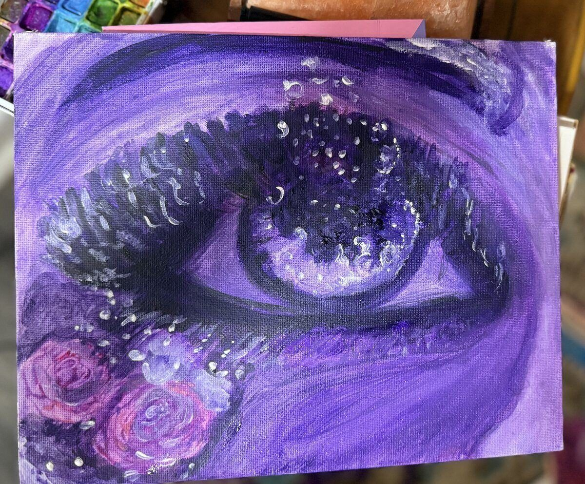
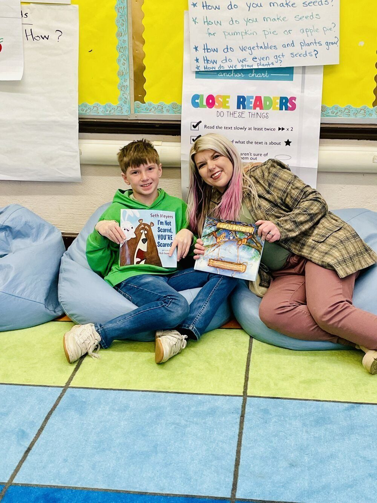
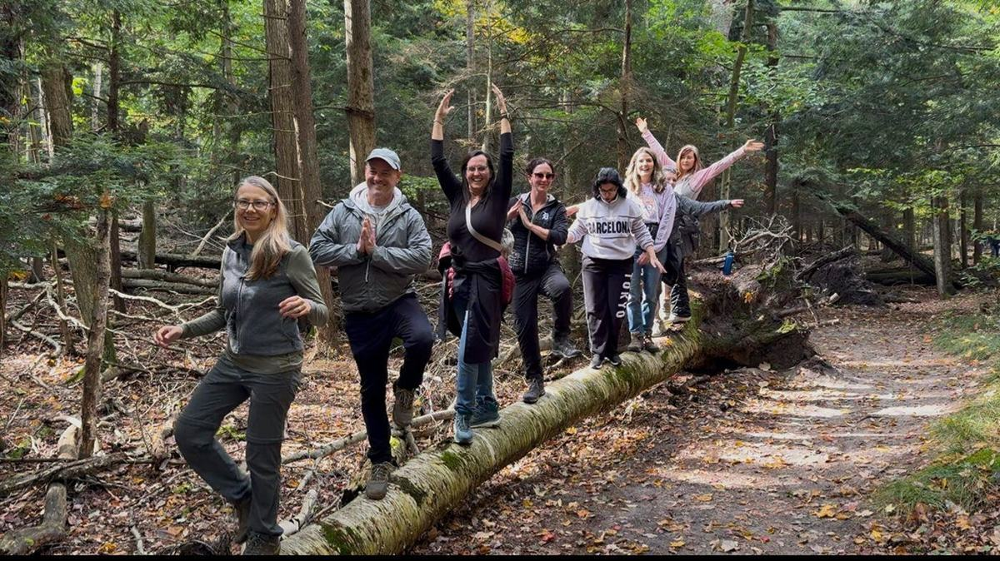
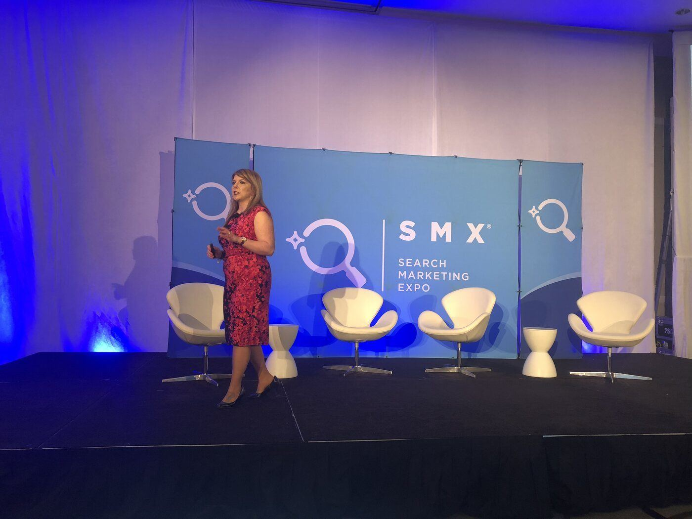
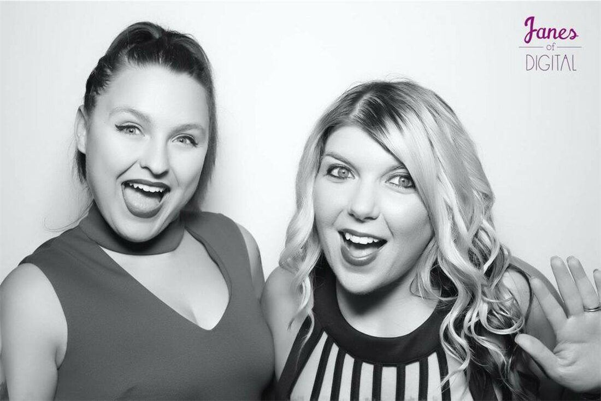
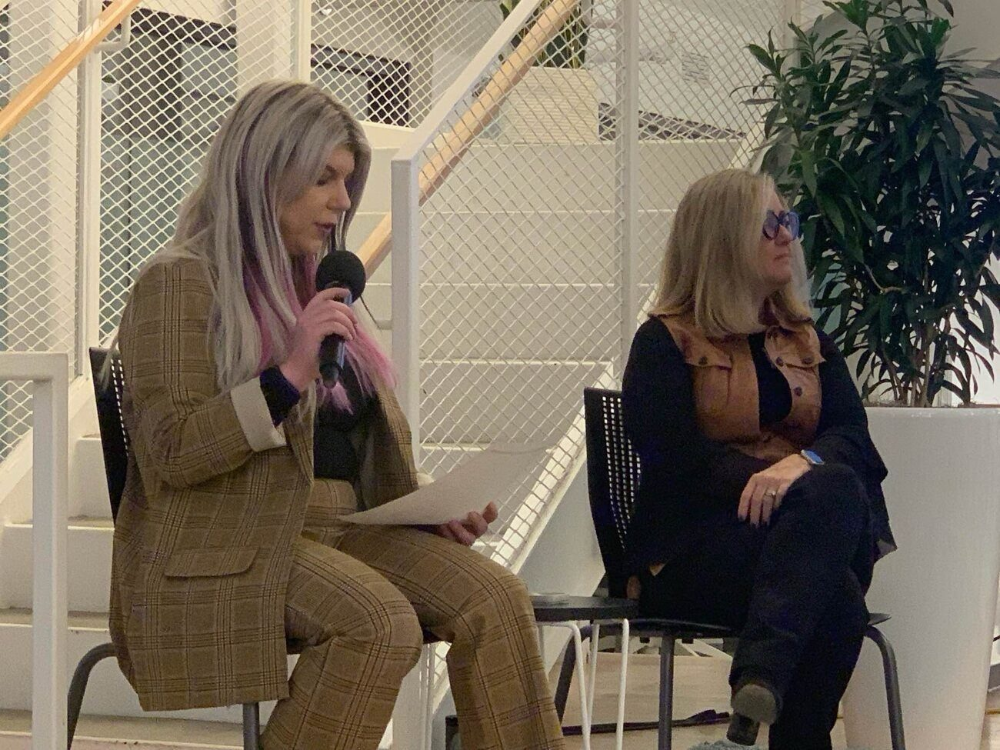
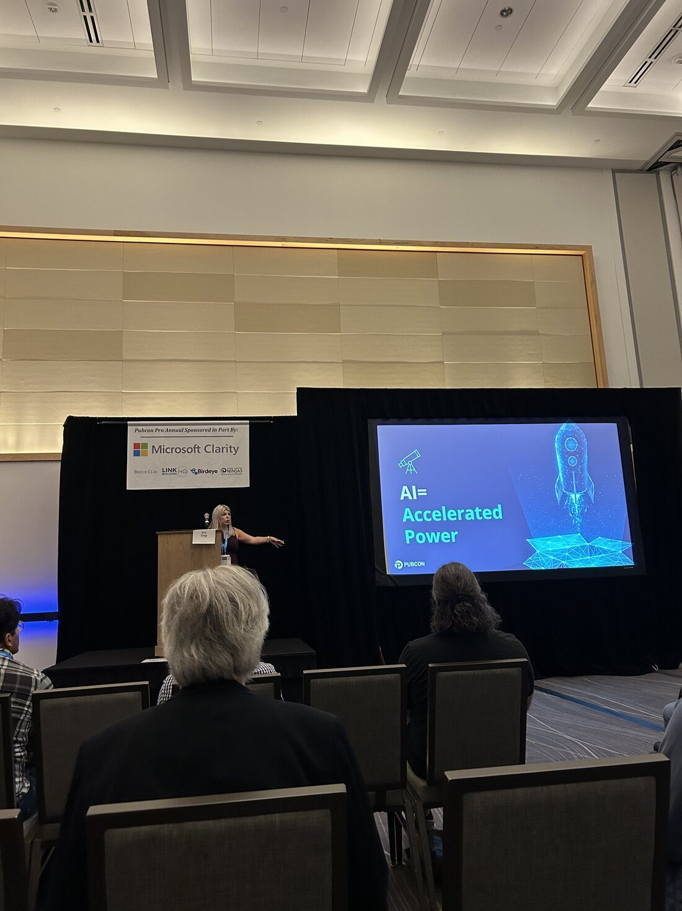
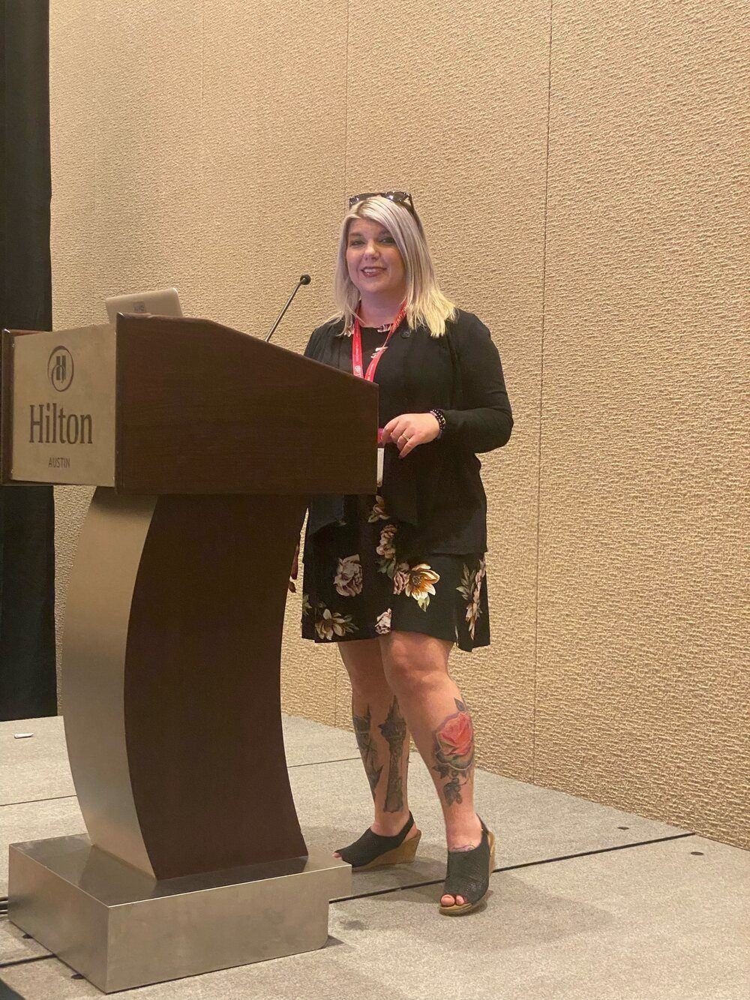
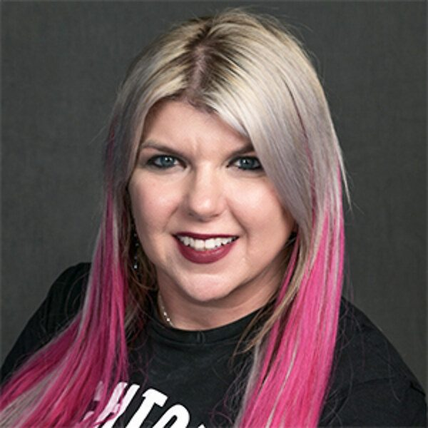

A marketing practice, a research lab, a publishing house, a studio, and a leadership movement. Built as one compounding system... designed to grow into everything it implies.
An lab compounds into existence. It is never finished.
Research becomes publishing. Publishing gathers a community. Community becomes events, then membership, then fellowships. Each part is the next part's beginning. Nothing here is finished, and that is the point.
Everything here lives in one of three states. Growth is not a rebrand. It is a thing moving from horizon, to forming, to active. This frame holds whatever comes next.
Live and operating today.
Marketing PracticeSystems-led growth, in the field ResearchInvestigating what comes next PublishingEssays, frameworks, original ideas StudioArt and visual thinking as signal Unapologetic LeadershipThe movement and its writingTaking shape now.
Community PlatformFor the people already gathering Intelligence InfrastructureMachine-readable authority systems Events & GatheringsSmall, intentional, in-person Publishing HouseLong-form and booksNamed, not yet built.
Membership ProgramsBelonging with structure FellowshipsDeveloping the next builders Products & ToolsIdeas that deserve to ship VenturesFuture businesses, spun from the workAdding something new means moving a card left. It never means starting over.
Each division is permanent. The marketing practice runs live inside a brand... the work here is the thinking behind it, not a service on offer. The structure was built oversized on purpose, with room for what hasn't arrived yet.
Systems-led growth, run inside a brand every day. Search, AI, audience, and revenue treated as one signal system. This is where the theory gets stress-tested in the field.
Investigating AI, discovery, leadership, information architecture, and commerce intelligence. The source the rest of the lab draws from.
Essays, frameworks, reports, and original ideas. The center of gravity, where trust compounds and books eventually emerge.
Design, storytelling, media, and visual thinking. Here, art works the way the systems do. It helps people see what they couldn't name yet.
The connective layer for founders, operators, researchers, artists, and builders already in orbit. Community is infrastructure.
Discovery, retrieval, knowledge systems, and machine-readable authority. The layer that makes a body of work legible to humans and machines.
Unapologetic Leadership. Identity, voice, self-trust, and human transformation. Becoming fully yourself, in public.
A working studio sits inside the lab. The paintings come from the same hand as the systems, and they carry the same signal.

Original work · Acrylic on canvasStated plainly, before it exists. Naming the trajectory is a commitment, not a promise of timing.
A few things are taking shape outside the usual lane. Where marketing meets the physical, the experiential, the things you can stand inside of. Early, unfinished, and on purpose.
Steel, story, and a little horsepower. Brand as a thing you can hear start up.
Places built to make you feel something before you unpack. Hospitality as narrative.
Marketing you can walk into. The system, made physical, made human.
Human + business + vibe. Built where the three overlap.
Clarity is more ethical than comfort.
Boundaries are a leadership skill.
Experience earns authority.
Silence is not the same as peace.
Detroit-rooted, by hand. One Step Forward supports K-12 students at Ralph J. Bunche Preparatory Academy, down to the basics: clean clothes, books, and someone showing up. InnovatED313 brings experiential STEAM learning to students and teachers across southeast Michigan.

One Step Forward · Bunche Prep, Detroit
Community · Building togetherMain-stage talks at the conferences where search and AI marketing are decided. Award stages. Rooms full of operators. This is the marketing practice, in public.

SMX · Search Marketing Expo
Janes of Digital
Fireside · In conversation
Keynote · On stage
At the podium
"We are no longer marketing on top of the system. We are marketing through the system."Amanda Friedt (formerly Amanda Farley) · Founder · One voice inside the lab
This body of work grows by gravity, not blast radius. Step in now and you arrive before most of this exists... which is the point.
Enter the LabMembership, fellowships, and gatherings open as they form.
We use one privacy-friendly analytics cookie to learn what resonates. No ads, no selling your data. See our Privacy Policy.